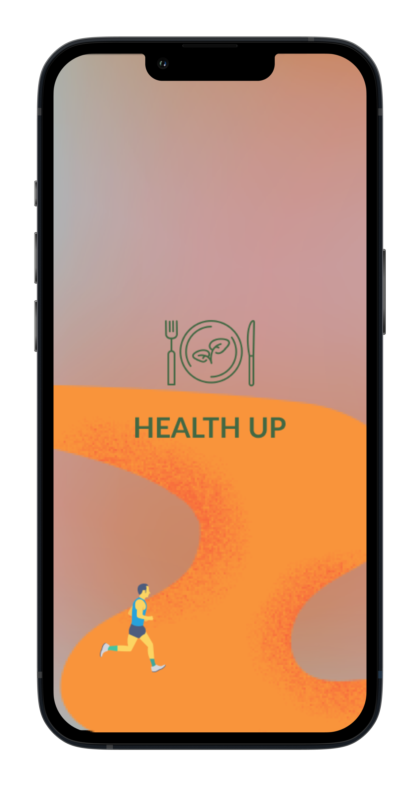
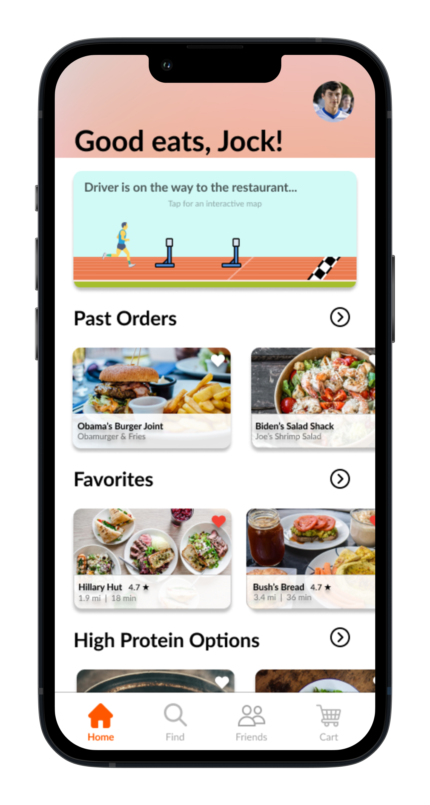
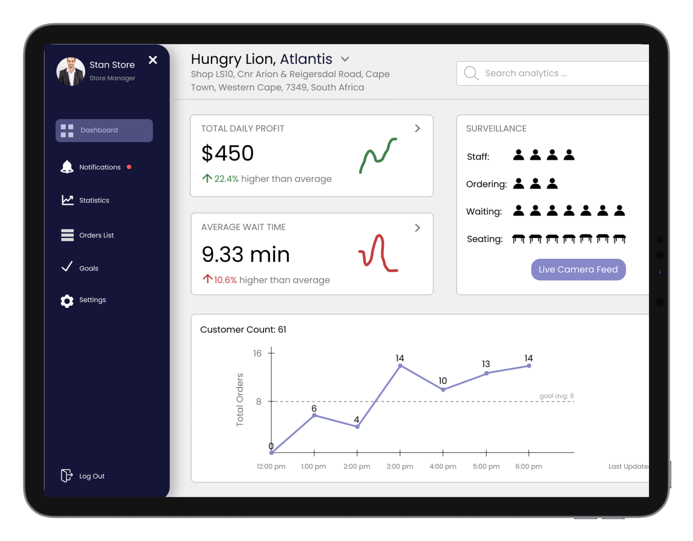
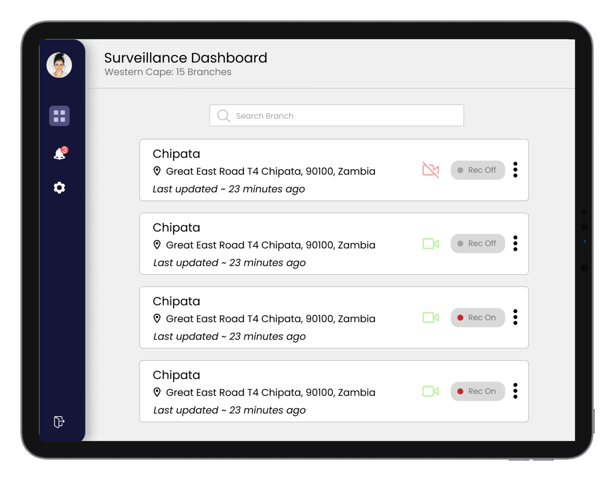
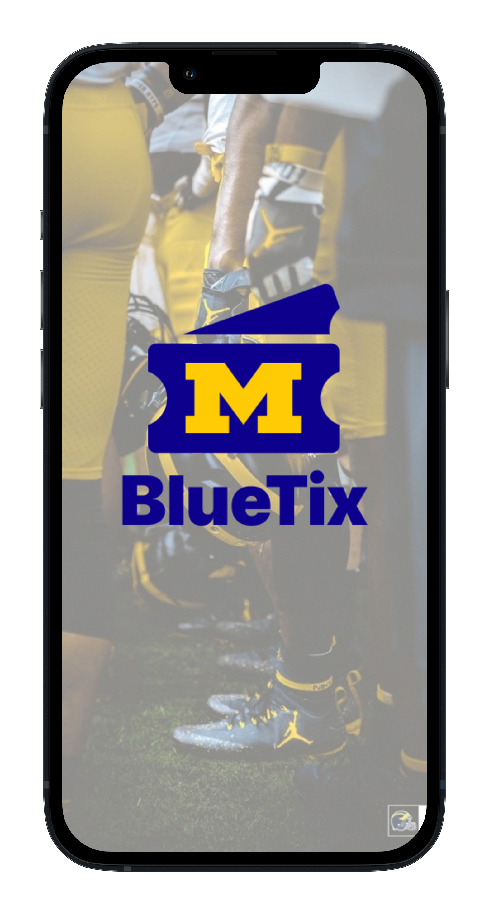
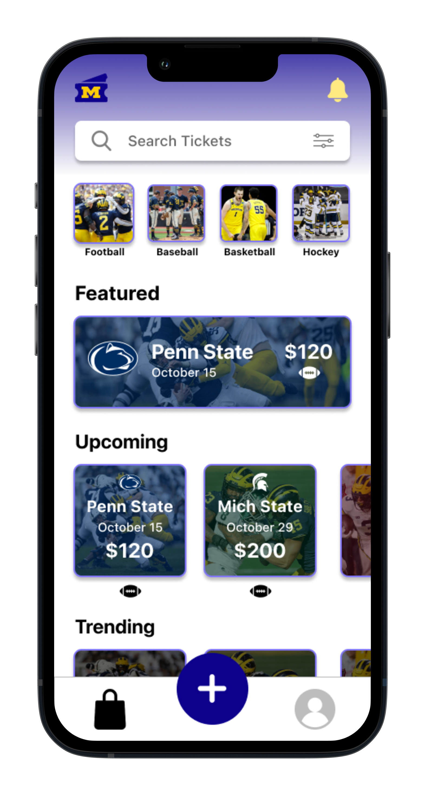
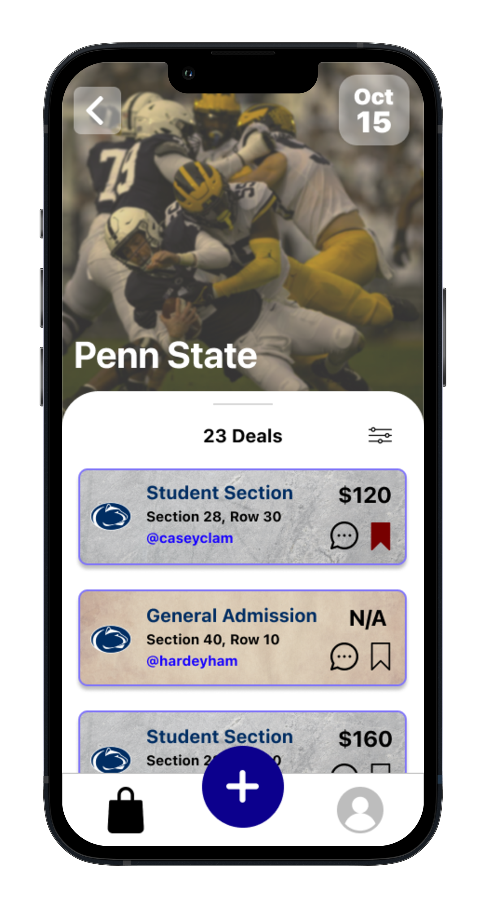
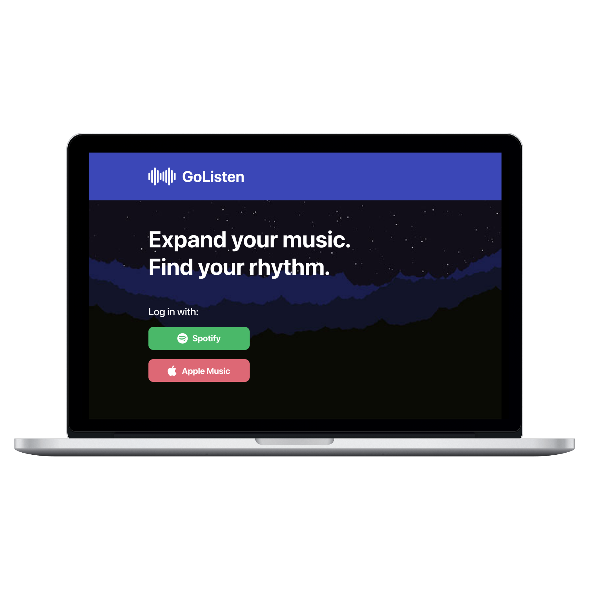
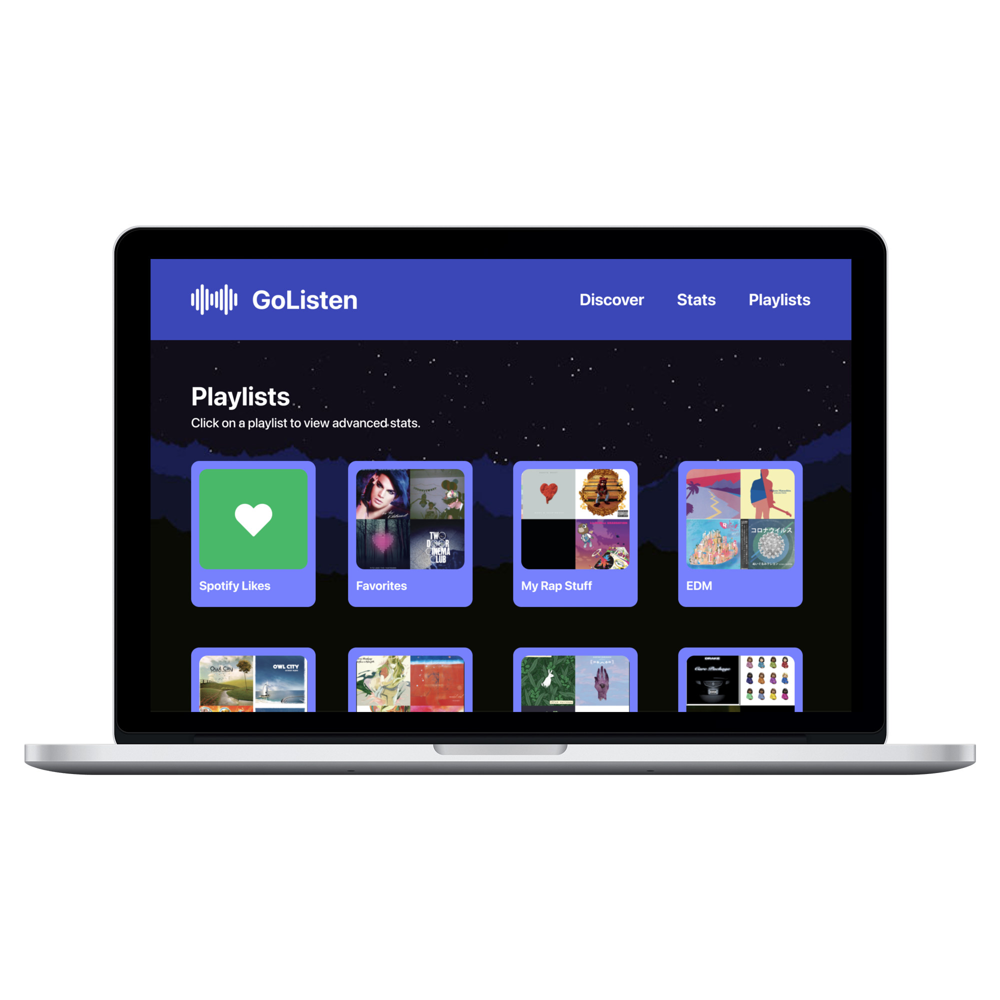

HealthUp
Co-designing a working prototype for a food delivery app that caters to young, health-conscious individuals.
Through a summer internship program (IXperience), my team and I were tasked with creating a food delivery app that differs from current competitors. Because of the lack of representation of vegans and vegetarians in current delivery apps, we decided to create an app that specializes in healthy food choices.



Polymorph
Designing a multi-user navigation system for fast food restaurant managers to track their real-time quality of service.
Polymorph, a company that specializes in design consulting, brought our team on as interns to help them design a navigation system for fast food restaurants. Our job was to provide fast food restaurant managers with real-time information on their quality of service. This would be presented through a tablet or computer screen.
 
BlueTix
An app for University of Michigan students to efficiently exchange sports tickets while avoiding scammers and bad deals.
The University of Michigan is known for its sports. A big part of campus life is going to the games, whether it be football, basketball, hockey, etc. For my project in my digital product design class, I decided to design an app that would allow students to safely buy and sell sports tickets. This is to avoid the unsafe exchanges elsewhere.
  
GoListen
Co-designing a working prototype for a food delivery app that caters to young, health-conscious individuals.
There aren't many accurate online ways to discover new music, or find similar songs/artists to the ones you like. Additionally, personal playlists can become outdated with songs that you don't like anymore, making songs annoying to skip through. I designed a website that allows users to discover, monitor and refine their music taste all in the same place.
 